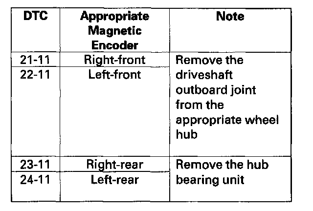

DTC 24-11
DTC 21-11: Right-front Magnetic Encoder Malfunction (Pulse Missing)DTC 22-11: Left-front Magnetic Encoder Malfunction (Pulse Missing)
DTC 23-11: Right-rear Magnetic Encoder Malfunction (Pulse Missing)
DTC 24-11: Left-rear Magnetic Encoder Malfunction (Pulse Missing)
1. Turn the ignition switch ON (II).
2. Clear the DTC with the HDS.
3. Test-drive the vehicle. Drive the vehicle at 13 mph (20 km/h) or more, and go a distance of 328 ft (100 m) or more.
NOTE: Drive the vehicle on the road, not on the lift.
4. Check for DTCs with the HDS.
Is DTC 21-11, 22-11, 23-11, and/or 24-11 indicated?
YES - Go to step 5.
NO - Intermittent failure, the system is OK at this time. Check for loose terminals between the wheel sensor 2P connector and the VSA modulator-control unit 37P connector. Refer to intermittent failures troubleshooting.
5. Turn the ignition switch OFF.
6. Inspect the appropriate magnetic encoder for debris or cracks.

Is the magnetic encoder surface OK?
YES - Replace the wheel bearing (front) or the hub bearing unit (rear).
NO - Clean off dust or dirt from the appropriate magnetic encoder surface on the wheel bearing or the hub bearing unit, then go to step 1 and recheck. If the DTC is still present, replace the appropriate wheel bearing or hub bearing unit.